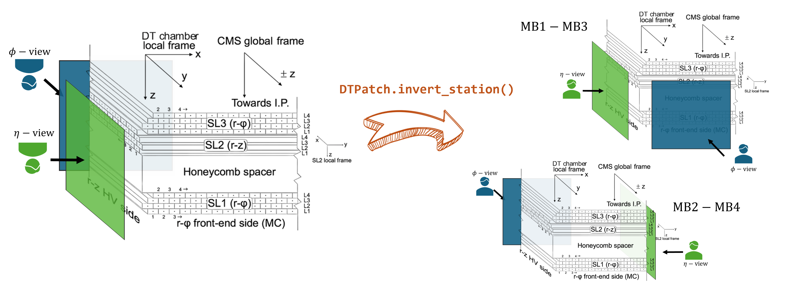

DTStationPatch
The DTStationPatch class provides visualization capabilities for DT Station. It can draw station and super layer
boundary boxes, and DT cells based on geometrical information taken from Station instances.
The class itself is not a matplotlib artist, but it creates a couple of matplotlib patch collections
to draw the station bounds and cells and that can be accessed as attributes of the DTStationPatch instance.
It adds to the provided matplotlib axes the following artists:
bounds_collections: A collection of patches representing the bounds of the station and its superlayers.cells_collection: A collection of patches representing each DT cell, with optional colormap based on time information.
Since station and super layers bounds are a patch collection independent of the cells collection, any supported matplotlib
rc parameters can be passed to customize the appearance of the bounds. The same applies to the cells collection, specially
the patch array that allows to define the color map to represent the drift cell properties of the
data table, keyed by (sl, l, w) (ADR-024).
The class supports plotting in both local and global DT CMS coordinate views. And it is possible
to draw the chamber in either the \(\phi\) or \(\eta\) orientation, displaying
the cells of SL1 and SL3 or the cells of SL2, respectively.
Tip
bounds_collections has the matplotlib property set_picker enabled, and the Station
instance stored as the station attribute. This allows for the creation of interactive plots
with the matplotlib pick_event.
- class mpldts.patches.dt_station_patch.DTStationPatch(station: Station, axes, faceview='phi', local=True, inverted=False, vmap='time', data=None, bounds_kwargs=None, cells_kwargs=None, kwargs=None)[source]
Bases:
DTRelatedPatchA class to visualize a 2D representation of a DT Station data in matplotlib context.
The per-event data is a table keyed by (sl, l, w) plus value columns (ADR-024): the patch colours the cell that matches a row and leaves the others at 0. Nothing is written on the geometry, so the same station draws two events without being copied.
Attributes:
- bounds_collectionmatplotlib.collections.PatchCollection
A collection of patches representing the bounds of the station and its superlayers.
- cells_collectionmatplotlib.collections.PatchCollection
A collection of patches representing each DT cell, with optional colormap based on time information.
- stationStation
The Station object containing the geometry information.
- axesmatplotlib.axes.Axes
The matplotlib axes to draw the patches on.
- viewstr
The view type, either “phi” or “eta”.
- localbool
Boolean indicating whether to use local or global coordinates.
- invertedbool
Boolean indicating whether to invert the view. If local is False, this will not have any effect.
- vmapstr
The variable to map to the colormap.
Important
Be aware that this is not a child class of
matplotlib.patches.Patch. Instead, it creates a couple ofmatplotlib.collections.PatchCollectionobjects to draw the station bounds and the cells.- __init__(station: Station, axes, faceview='phi', local=True, inverted=False, vmap='time', data=None, bounds_kwargs=None, cells_kwargs=None, kwargs=None)[source]
Initialize a DTPatch instance.
- Parameters:
station (Station) – The Station object containing the geometry information.
axes (matplotlib.axes.Axes) – The matplotlib axes to draw the patches on.
faceview (str, optional) – The view type, either “phi” or “eta”.
local (bool, optional) – Boolean indicating whether to use local or global coordinates.
inverted (bool, optional) – Boolean indicating whether to invert the view. If local is False, this will not have any effect.
vmap (str, optional) – The variable to map to the colormap.
data (pandas.DataFrame, dict, or list of dict) – The cell data to colour the cells with: a DataFrame, a dict or a list of dicts keyed by sl, l and w, plus the column vmap (e.g. [{“sl”: 1, “l”: 1, “w”: 1, “time”: 300}, …]). Cells without a row, or without the column, are drawn with 0.
bounds_kwargs (dict, optional) – Additional keyword arguments to apply specifically to the bounds PatchCollection.
cells_kwargs (dict, optional) – Additional keyword arguments to apply specifically to the cells PatchCollection.
kwargs (dict, optional) – Additional keyword arguments to apply to both collections.
- Returns:
None. Adds two collections, one for the bounds and another for each DT cell, to the provided matplotlib axes.
- change_vmap(vmap)[source]
Change the variable to map to the colormap. Cells without a value for it are set to 0.
- Parameters:
vmap (str) – The variable to map to the colormap.
- invert_view()
Invert the view. The inversion depends on the current view and the station’s wheel and sector. Details about DT chamber orientations can be found here.
- move_to_global()
Move the collections to the global CMS frame.
Examples
The following example shows how to create DTStationPatch objects and plot the cells of a DT chamber in the local view.
1import matplotlib.pyplot as plt
2from mpldts.geometry import Station
3from mpldts.geometry.sources import CMSXMLSource
4from mpldts.patches import DTStationPatch
5
6dpi = 100 # Plot resolution
7
8# Cell appearance configuration
9cells_kwargs = {
10 "linewidth": 0.4 * 72 / dpi,
11 "facecolor": "none",
12 "edgecolor": "k",
13}
14
15# Create figure and subplots
16fig, axs = plt.subplots(1, 2, figsize=(15, 7), sharey=True, dpi=dpi)
17axs = axs.flatten()
18
19# Define DT station: the CMS source gives the spec, the view draws it
20source = CMSXMLSource()
21station = Station.from_spec(source.station(-1, 1, 1), -1, 1, 1)
22
23# Create patches for phi-view and eta-view
24dt_patch_phi = DTStationPatch(
25 station,
26 axes=axs[0],
27 faceview="phi",
28 local=True,
29 cells_kwargs=cells_kwargs,
30)
31dt_patch_z = DTStationPatch(
32 station,
33 axes=axs[1],
34 faceview="eta",
35 local=True,
36 cells_kwargs=cells_kwargs,
37)
38
39# Set axis limits for phi-view
40width, height, length = station.bounds
41x, y, z = station.local_center
42axs[0].set_xlim(x - width / 2 - 5, x + width / 2 + 5)
43axs[0].set_ylim(z - height / 2 - 5, z + height / 2 + 5)
44
45# Set axis limits for eta-view
46axs[1].set_xlim(y - length / 2 - 5, y + length / 2 + 5)
47axs[1].set_ylim(z - height / 2 - 5, z + height / 2 + 5)
48
49# Add titles and labels
50fig.suptitle(f"Local view of a DT Station : {station.name}")
51axs[0].set_title(r"$\phi$-view")
52axs[1].set_title(r"$\eta$-view")
53axs[0].set_xlabel("x [cm]")
54axs[0].set_ylabel("z [cm]")
55axs[1].set_xlabel("x [cm]")
56
57plt.tight_layout()
58plt.show()
59fig.savefig("./cms_dt_local_wb.svg", dpi=dpi)

Setting the bounds_kwargs and cells_kwargs arguments allows for customization of the
appearance of the bounds and cells, respectively. And as mentioned before, the data argument
keyed by (sl, l, w) defines the colormap from any drift cell property, as shown in the following
example.
1import matplotlib.pyplot as plt
2from mpldts.geometry import Station
3from mpldts.geometry.sources import CMSXMLSource
4from mpldts.patches import DTStationPatch
5from matplotlib.colors import Normalize
6
7dpi = 100 # Plot resolution
8
9# Configure colormap and normalization for the plot
10cmap = plt.get_cmap("viridis").copy()
11cmap.set_under("none") # Set color for values below the minimum
12norm = Normalize(vmin=0.1, vmax=20) # Normalize data values to colormap range
13
14# Cell appearance configuration
15cells_kwargs = {
16 "linewidth": 0.4 * 72 / dpi,
17 "edgecolor": "k",
18 "cmap": cmap,
19 "norm": norm,
20}
21
22# Bounds appearance configuration
23bounds_kwargs = {
24 "linewidth": 72 / dpi,
25 "edgecolor": "k",
26 # Fill colors for chamber, SL1, SL3, and SL2 in that order
27 "facecolor": ["lightgray", "lightyellow", "lightpink", "lightblue"],
28 "alpha": 0.3, # Transparency
29}
30
31# Define DT station information (example data)
32dt_info = [
33 {"sl": 1, "l": 1, "w": 1, "var1": 2},
34 {"sl": 1, "l": 2, "w": 1, "var1": 5},
35 {"sl": 1, "l": 3, "w": 1, "var1": 10},
36 {"sl": 1, "l": 4, "w": 2, "var1": 1},
37 {"sl": 2, "l": 1, "w": 1, "var1": 7},
38 {"sl": 2, "l": 2, "w": 1, "var1": 3},
39 {"sl": 2, "l": 3, "w": 1, "var1": 8},
40 {"sl": 2, "l": 4, "w": 2, "var1": 4},
41 {"sl": 3, "l": 1, "w": 1, "var1": 6},
42 {"sl": 3, "l": 2, "w": 1, "var1": 9},
43 {"sl": 3, "l": 3, "w": 1, "var1": 12},
44 {"sl": 3, "l": 4, "w": 2, "var1": 17},
45]
46
47# Create figure and subplots
48fig, axs = plt.subplots(1, 2, figsize=(15, 7), sharey=True, dpi=dpi)
49axs = axs.flatten()
50
51# Define DT station: the CMS source gives the spec, the view draws it
52source = CMSXMLSource()
53station = Station.from_spec(source.station(-1, 1, 2), -1, 1, 2)
54
55# Create patches for phi-view and eta-view
56dt_patch_phi = DTStationPatch(
57 station,
58 data=dt_info,
59 axes=axs[0],
60 faceview="phi",
61 local=True,
62 cells_kwargs=cells_kwargs,
63 vmap="var1",
64 bounds_kwargs=bounds_kwargs,
65)
66dt_patch_z = DTStationPatch(
67 station,
68 axes=axs[1],
69 faceview="eta",
70 local=True,
71 cells_kwargs=cells_kwargs,
72 vmap="var1",
73 bounds_kwargs=bounds_kwargs,
74)
75
76# Add colorbar for the variable mapped to cell colors
77fig.colorbar(dt_patch_z.cells_collection, label="Arbitrary variable")
78
79# Set axis limits for phi-view
80width, height, length = station.bounds
81x, y, z = station.local_center
82axs[0].set_xlim(x - width / 2 - 5, x + width / 2 + 5)
83axs[0].set_ylim(z - height / 2 - 5, z + height / 2 + 5)
84
85# Set axis limits for eta-view
86axs[1].set_xlim(y - length / 2 - 5, y + length / 2 + 5)
87axs[1].set_ylim(z - height / 2 - 5, z + height / 2 + 5)
88
89# Add titles and labels
90fig.suptitle(f"Local view of a DT Station : {station.name}")
91axs[0].set_title(r"$\phi$-view")
92axs[1].set_title(r"$\eta$-view")
93axs[0].set_xlabel("x [cm]")
94axs[0].set_ylabel("z [cm]")
95axs[1].set_xlabel("x [cm]")
96
97plt.tight_layout()
98plt.show()
99fig.savefig("./cms_dt_local_c.svg", dpi=dpi)

Since each DTStationPatch object is an isolated instance, it is possible to plot multiple chambers in
the same axes and use the global mode to utilize the exact CMS coordinate system to visualize part
or the whole DT system.
1import matplotlib.pyplot as plt
2from mpl_toolkits.axes_grid1.inset_locator import zoomed_inset_axes
3from mpl_toolkits.axes_grid1.inset_locator import mark_inset
4from mpldts.geometry import Station
5from mpldts.geometry.sources import CMSXMLSource
6from mpldts.patches import DTStationPatch
7
8dpi = 800
9
10bounds_kwargs = {
11 "linewidth": 72 / dpi,
12 "edgecolor": "k",
13 "facecolor": ["lightgray", "lightyellow", "lightpink", "lightblue"],
14 "alpha": 0.4,
15}
16cells_kwargs = {
17 "linewidth": 0.2 * 72 / dpi,
18 "facecolor": "none",
19 "edgecolor": "k",
20}
21
22source = CMSXMLSource()
23
24fig, ax = plt.subplots(1, 1, figsize=(14, 7), dpi=dpi)
25axins = zoomed_inset_axes(
26 ax, 4, loc="upper left", bbox_to_anchor=(1.1, 1.01), bbox_transform=ax.transAxes
27)
28
29for sc in range(1, 15):
30 for st in range(1, 5):
31 if (sc == 13 or sc == 14) and st != 4:
32 continue # Sector 13 and 14 are only one MB4 station
33 station = Station.from_spec(source.station(2, sc, st), 2, sc, st)
34 _ = DTStationPatch(
35 station,
36 axes=ax,
37 faceview="phi",
38 local=False,
39 bounds_kwargs=bounds_kwargs,
40 cells_kwargs=cells_kwargs,
41 )
42
43cells_kwargs["linewidth"] = 0.5 * 72 / dpi
44
45for sc in [1, 2, 12]: # Only 3 sectors for the zoomed in view
46 for st in range(1, 3):
47 station = Station.from_spec(source.station(-2, sc, st), -2, sc, st)
48 _ = DTStationPatch(
49 station,
50 axes=axins,
51 faceview="phi",
52 local=False,
53 bounds_kwargs=bounds_kwargs,
54 cells_kwargs=cells_kwargs,
55 )
56
57ax.set_title("Global view of DT Stations on Wheel -2")
58ax.set_xlabel("x [cm]")
59ax.set_ylabel("y [cm]")
60
61ax.set_xlim(-800, 800)
62ax.set_ylim(-800, 800)
63
64x1, x2, y1, y2 = 350, 550, -200, 200
65axins.set_xlim(x1, x2)
66axins.set_ylim(y1, y2)
67
68plt.xticks(visible=False)
69plt.yticks(visible=False)
70
71mark_inset(ax, axins, loc1=2, loc2=3, fc="none", ec="r", fill=True)
72
73plt.subplots_adjust(right=0.55) # Increase space on the right
74
75plt.show()
76fig.savefig("cms_dts_phi_zoomed.svg", dpi=dpi)

And also in \(\eta\) orientation, that means the longitudinal CMS view:
1import matplotlib.pyplot as plt
2from mpl_toolkits.axes_grid1.inset_locator import zoomed_inset_axes
3from mpl_toolkits.axes_grid1.inset_locator import mark_inset
4from mpldts.geometry import Station
5from mpldts.geometry.sources import CMSXMLSource
6from mpldts.patches import DTStationPatch
7
8dpi = 800
9
10bounds_kwargs = {
11 "linewidth": 72 / dpi,
12 "edgecolor": "k",
13 "facecolor": ["lightgray", "lightyellow", "lightpink", "lightblue"],
14 "alpha": 0.4,
15}
16cells_kwargs = {
17 "linewidth": 0.2 * 72 / dpi,
18 "facecolor": "none",
19 "edgecolor": "k",
20}
21
22source = CMSXMLSource()
23
24fig, ax = plt.subplots(1, 1, figsize=(14, 5))
25axins = zoomed_inset_axes(
26 ax, 3, loc="upper left", bbox_to_anchor=(1.05, 1.1), bbox_transform=ax.transAxes
27)
28
29for wh in range(-2, 3):
30 for st in range(1, 5):
31 station = Station.from_spec(source.station(wh, 2, st), wh, 2, st)
32 _ = DTStationPatch(
33 station,
34 axes=ax,
35 faceview="eta",
36 local=False,
37 bounds_kwargs=bounds_kwargs,
38 cells_kwargs=cells_kwargs,
39 )
40
41cells_kwargs["linewidth"] = 0.5 * 72 / dpi
42
43for wh in range(1, 3):
44 for st in range(1, 3):
45 station = Station.from_spec(source.station(wh, 2, st), wh, 2, st)
46 _ = DTStationPatch(
47 station,
48 axes=axins,
49 faceview="eta",
50 local=False,
51 bounds_kwargs=bounds_kwargs,
52 cells_kwargs=cells_kwargs,
53 )
54
55ax.set_title("Global view of DT Stations on Sector 3")
56ax.set_xlabel("z [cm]")
57ax.set_ylabel("r [cm]")
58
59ax.set_xlim(-800, 800)
60ax.set_ylim(400, 800)
61
62x1, x2, y1, y2 = 190, 610, 410, 540
63axins.set_xlim(x1, x2)
64axins.set_ylim(y1, y2)
65
66plt.xticks(visible=False)
67plt.yticks(visible=False)
68
69mark_inset(ax, axins, loc1=2, loc2=4, fc="none", ec="0.5")
70
71plt.subplots_adjust(right=0.55) # Increase space on the right
72
73plt.show()
74fig.savefig("cms_dts_eta_zoomed.svg", dpi=500)

As you can notice from the first example, the chamber appears in the local reference frame
resulting in an unnaturally rotated view. But, by using the invert_view method inherited from DTRelatedPatch class,
(or setting the invert argument True when instantiating the DTStationPatch class) you can easily
invert the view by applying reflections to the chamber view according to wheel, station and faceview (\(\phi\) or \(\eta\))
and the result is a more natural view of the chamber as illustrated in the follow illustration.


inversion (1) or (2) will depend on DT chamber’s orientation, that means, if detector face is in \(+z\) or \(-z\) direction, detailed information can be found here.
The following example shows how to do this:
1import matplotlib.pyplot as plt
2from matplotlib.colors import Normalize
3from mpldts.geometry import Station
4from mpldts.geometry.sources import CMSXMLSource
5from mpldts.patches import DTStationPatch
6
7cmap = plt.get_cmap("viridis").copy()
8cmap.set_under("none")
9norm = Normalize(vmin=0.1, vmax=20)
10
11dpi = 100
12
13bounds_kwargs = {
14 "linewidth": 72 / dpi,
15 "edgecolor": "k",
16 "facecolor": ["lightgray", "lightyellow", "lightpink", "lightblue"],
17 "alpha": 0.3,
18}
19cells_kwargs = {
20 "linewidth": 0.4 * 72 / dpi,
21 "edgecolor": "k",
22 "cmap": cmap,
23 "norm": norm,
24}
25
26dt_info = [
27 {"sl": 1, "l": 1, "w": 1, "time": 10},
28 {"sl": 1, "l": 2, "w": 1, "time": 10},
29 {"sl": 1, "l": 3, "w": 1, "time": 10},
30 {"sl": 1, "l": 4, "w": 2, "time": 10},
31 {"sl": 2, "l": 1, "w": 1, "time": 10},
32 {"sl": 2, "l": 2, "w": 1, "time": 10},
33 {"sl": 2, "l": 3, "w": 1, "time": 10},
34 {"sl": 2, "l": 4, "w": 2, "time": 10},
35 {"sl": 3, "l": 1, "w": 1, "time": 10},
36 {"sl": 3, "l": 2, "w": 1, "time": 10},
37 {"sl": 3, "l": 3, "w": 1, "time": 10},
38 {"sl": 3, "l": 4, "w": 2, "time": 10},
39]
40
41fig, axs = plt.subplots(2, 2, figsize=(10, 10), dpi=dpi)
42axs = axs.flatten()
43
44source = CMSXMLSource()
45station = Station.from_spec(source.station(-1, 1, 2), -1, 1, 2)
46
47dt_patch_phi = DTStationPatch(
48 station,
49 data=dt_info,
50 axes=axs[0],
51 faceview="phi",
52 local=True,
53 cells_kwargs=cells_kwargs,
54 bounds_kwargs=bounds_kwargs,
55)
56dt_patch_z = DTStationPatch(
57 station,
58 axes=axs[2],
59 faceview="eta",
60 local=True,
61 cells_kwargs=cells_kwargs,
62 bounds_kwargs=bounds_kwargs,
63)
64dt_patch_phi = DTStationPatch(
65 station,
66 axes=axs[1],
67 faceview="phi",
68 local=True,
69 inverted=True,
70 cells_kwargs=cells_kwargs,
71 bounds_kwargs=bounds_kwargs,
72)
73dt_patch_z = DTStationPatch(
74 station,
75 axes=axs[3],
76 faceview="eta",
77 local=True,
78 inverted=True,
79 cells_kwargs=cells_kwargs,
80 bounds_kwargs=bounds_kwargs,
81)
82
83line = plt.Line2D((0.5, 0.5), (0.1, 0.9), color="k", linewidth=2)
84fig.add_artist(line)
85
86width, height, length = station.bounds
87x, y, z = station.local_center
88
89axs[0].set_xlim(x - width / 2 - 5, x + width / 2 + 5)
90axs[0].set_ylim(z - height / 2 - 5, z + height / 2 + 5)
91
92axs[2].set_xlim(y - length / 2 - 5, y + length / 2 + 5)
93axs[2].set_ylim(z - height / 2 - 5, z + height / 2 + 5)
94
95axs[1].set_xlim(x - width / 2 - 5, x + width / 2 + 5)
96axs[1].set_ylim(z - height / 2 - 5, z + height / 2 + 5)
97
98axs[3].set_xlim(y - length / 2 - 5, y + length / 2 + 5)
99axs[3].set_ylim(z - height / 2 - 5, z + height / 2 + 5)
100
101fig.suptitle(f"Local view of a DT Station : {station.name}")
102
103axs[0].set_xlabel("x [cm]")
104axs[0].set_ylabel("z [cm]")
105axs[0].set_title(r"$\phi$-view")
106
107axs[2].set_xlabel("x [cm]")
108axs[2].set_ylabel("z [cm]")
109axs[2].set_title(r"$\eta$-view")
110
111axs[1].set_xlabel("x [cm]")
112axs[1].set_ylabel("-z [cm]")
113axs[1].set_title(r"$\phi$-view (inverted)")
114
115axs[3].set_xlabel("-x [cm]")
116axs[3].set_ylabel("-z [cm]")
117axs[3].set_title(r"$\eta$-view (inverted)")
118
119plt.subplots_adjust(left=0.1, right=0.9, top=0.9, bottom=0.1, wspace=0.4, hspace=0.4)
120plt.show()
121fig.savefig("./cms_dt_local_inversion.svg", dpi=dpi)